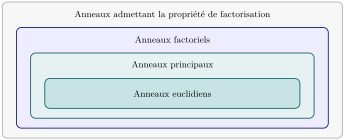

-
Deux éléments \(a,b\in A\) sont associés s’il existe \(u\in A^{\times}\) tel que\begin{equation*} a=ub\text{.} \end{equation*}
-
Un élément \(\pi\in A\) est irréductible s’il est non nul, non inversible, et si toute égalité \(\pi=ab\text{,}\) avec \(a,b\in A\text{,}\) entraîne que \(a\) ou \(b\) est inversible.
-
Un élément \(p\in A\) est premier s’il est non nul, non inversible, et si, pour tous \(a,b\in A\text{,}\)\begin{equation*} p\mid ab\quad\Longrightarrow\quad p\mid a\ \text{ou}\ p\mid b. \end{equation*}
Section 1.1 Factorisation
Rappel 1.1.1. Éléments associés, irréductibles et premiers.
Rappel 1.1.2. Propriété de factorisation et anneau factoriel.
-
L’anneau \(A\) admet la propriété de factorisation si tout élément non nul et non inversible de \(A\) s’écrit comme un produit fini d’éléments irréductibles :\begin{equation*} a=\pi_1\cdots \pi_n,\qquad n\geq 1. \end{equation*}
-
L’anneau \(A\) est factoriel s’il admet la propriété de factorisation et si cette factorisation est unique à l’ordre des facteurs et à association près. Autrement dit, si\begin{equation*} \pi_1\cdots \pi_n=\varpi_1\cdots \varpi_m \end{equation*}avec tous les \(\pi_i\) et \(\varpi_j\) irréductibles, alors \(n=m\) et il existe une permutation \(\sigma\) de \(\{1,\ldots,n\}\) telle que \(\pi_i\) et \(\varpi_{\sigma(i)}\) soient associés pour tout \(i\text{.}\)
Rappel 1.1.3. Anneau principal.
L’anneau \(A\) est principal si tout idéal \(I\) de \(A\) est engendré par un seul élément : il existe \(a\in A\) tel que
\begin{equation*}
I=(a)=aA=\{ax\mid x\in A\}.
\end{equation*}
Rappel 1.1.4. Stathme et anneau euclidien.
Un stathme euclidien sur \(A\) est une application
\begin{equation*}
\delta:A\setminus\{0\}\longrightarrow\mathbb{N}
\end{equation*}
telle que, pour tous \(a\in A\) et \(b\in A\setminus\{0\}\text{,}\) il existe \(q,r\in A\) vérifiant
\begin{equation*}
a=bq+r,\qquad r=0\ \text{ou}\ \delta(r)\lt\delta(b).
\end{equation*}
L’anneau \(A\) est euclidien s’il admet un tel stathme. Les éléments \(q\) et \(r\) sont respectivement un quotient et un reste de la division de \(a\) par \(b\text{;}\) leur unicité n’est pas exigée.
Rappel 1.1.5. Euclidien implique principal, qui implique factoriel, et admet la propriété de factorisation..

Quatre rectangles emboîtés représentent, du plus petit au plus grand, les anneaux euclidiens, principaux, factoriels, puis les anneaux admettant la propriété de factorisation.
Ces inclusions sont strictes en général. L’anneau \(\mathbb{Z}[(1+\sqrt{-19})/2]\) est principal mais non euclidien ; \(k[X,Y]\text{,}\) pour \(k\) un corps, est factoriel mais non principal ; \(\mathbb{Z}[\sqrt{-5}]\) admet la propriété de factorisation mais n’est pas factoriel.
Exercice 1.1.1. Mes premiers anneaux euclidiens.
-
Montrer que \(\mathbb{Z}\) est euclidien.
-
Soit \(k\) un corps. Montrer que \(k[X]\) est euclidien.
-
Montrer que l’anneau \(\mathbb{Z}[i]=\{a+ib\mid a,b\in\mathbb{Z}\}\) est euclidien de stathme \(N(a+ib)=a^2+b^2\text{.}\)
-
Montrer que l’anneau \(\mathbb{Z}[i\sqrt{2}]=\{a+i\sqrt{2}b\mid a,b\in\mathbb{Z}\}\) est euclidien.
Solution.
-
On montre que la valeur absolue \(|\cdot|\) est un stathme pour \(\mathbb{Z}\) en utilisant la division euclidienne classique.
-
On montre que le degré \(\deg(\cdot)\) est un stathme pour \(k[X]\text{.}\) Soit \(B(X)\) un polynôme non nul de \(k[X]\) que l’on suppose unitaire sans perte de généralité. Soit \(A(X)\in k[X]\text{.}\) On montre par récurrence sur \(\deg(A)\) qu’il existe \(Q(X),R(X)\in k[X]\) tels que\begin{equation*} A(X)=B(X)Q(X)+R(X),\qquad R(X)=0\ \text{ou}\ \deg(R)\lt\deg(B). \end{equation*}Si \(\deg(A)=0\text{,}\) alors soit \(\deg(B)=0\) et on prend \(Q=A/B\) et \(R=0\text{,}\) soit \(\deg(B)\gt 0\) et on prend \(Q=0\) et \(R=A\text{.}\)Si \(\deg(A)\gt 0\text{,}\) alors soit \(\deg(A)\lt\deg(B)\) et on prend \(Q=0\) et \(R=A\text{,}\) soit \(\deg(A)\geq\deg(B)\text{.}\) Dans ce dernier cas, on écrit \(A(X)\) comme \(a_nX^n+A'(X)\) où \(\deg(A')\lt\deg(A)\) et on applique l’hypothèse de récurrence à \(A'(X)\) pour en déduire l’existence de \(Q'(X),R'(X)\) tels que\begin{equation*} A'(X)=B(X)Q'(X)+R'(X),\qquad R'(X)=0\ \text{ou}\ \deg(R')\lt\deg(B). \end{equation*}On pose alors \(Q(X)=a_nX^{n-\deg(B)}+Q'(X)\) et \(R(X)=R'(X)+a_nX^n-a_nX^{n-\deg(B)}B(X)\) pour en déduire \(A(X)=B(X)Q(X)+R(X)\) avec \(R(X)=0\) ou \(\deg(R)\lt\deg(B)\text{.}\)
-
Soit \(b\in \mathbb{Z}[i]\) non nul et soit \(a\in \mathbb{Z}[i]\text{.}\) Le quotient \(z:=a/b\) est un nombre complexe, et l’on note \(\alpha\) et \(\beta\) sa partie réelle et sa partie imaginaire. Tout nombre réel \(r\) se décompose de manière unique comme la somme d’un entier \(r_1\) et d’un nombre réel \(-1/2\leq r_2\lt 1/2\text{;}\) on applique ce fait à \(\alpha\) et \(\beta\) pour obtenir \(z=(\alpha_1+i\beta_1)+(\alpha_2+i\beta_2)\) avec \(q:=\alpha_1+i\beta_1\in \mathbb{Z}[i]\) et \(w:=\alpha_2+i\beta_2\) de norme \(N(w)=\alpha_2^2+\beta_2^2\lt 1/2+1/2=1\text{.}\) On pose \(r:=bw=a-qb\in \mathbb{Z}[i]\) et l’on obtient \(a=bq+r\) avec \(N(r)=N(b)N(w)\lt N(b)\text{.}\)
-
On procède de manière analogue à l’exercice précédent, en utilisant le stathme \(N(a+i\sqrt{2}b)=a^2+2b^2\text{.}\) Cette fois-ci, on décompose la partie imaginaire \(\beta\) de \(z=a/b\) comme la somme d’un élément de \(\sqrt{2}\mathbb{Z}\) et d’un élément de \([-\sqrt{2}/2,\sqrt{2}/2[\text{.}\)
Exercice 1.1.2. Caractérisation d’Euler-Gauss.
Soit \(A\) un anneau (commutatif, unitaire) intègre.
-
Montrer que tout élément premier est irréductible.
-
Soit \(A\) un anneau qui vérifie la propriété de factorisation. Montrer que \(A\) est factoriel si et seulement si tout élément irréductible est premier.
Solution.
-
Soit \(p\in A\) premier et supposons que \(p=ab\) avec \(a,b\in A\text{.}\) Alors \(p\mid ab\text{,}\) donc \(p\mid a\) ou \(p\mid b\text{.}\) Supposons que \(p\mid a\text{,}\) alors il existe \(c\in A\) tel que \(a=pc\text{.}\) On obtient alors par intégrité\begin{equation*} p=ab=pcb,\qquad 1=cb. \end{equation*}Ainsi, \(b\) est inversible et \(p\) est irréductible.
-
Supposons que \(A\) est factoriel et soit \(\pi\in A\) irréductible. Soit \(a,b\in A\) tels que \(\pi\mid ab\) et soit \(c\in A\) tel que \(ab=c\pi\text{.}\) Comme \(A\) est factoriel, on peut écrire \(a=\pi_1\cdots \pi_n\text{,}\) \(b=\pi_{n+1}\cdots \pi_m\) et \(c=\rho_1\cdots \rho_k\) avec tous les \(\pi_i,\rho_l\) irréductibles. On obtient alors\begin{equation*} \pi_1\cdots \pi_m=\rho_1\cdots \rho_k\pi. \end{equation*}Par unicité de la factorisation, il existe un \(i\) tel que \(\pi_i\) et \(\pi\) soient associés. Ainsi, \(\pi\mid a\) ou \(\pi\mid b\text{,}\) et \(\pi\) est premier.Réciproquement, supposons que tout élément irréductible est premier. Soit \(a\in A\) non nul et non inversible. Comme \(A\) admet la propriété de factorisation, on peut écrire \(a=\pi_1\cdots \pi_n\) avec tous les \(\pi_i\) irréductibles. Si l’on a une autre factorisation \(a=\varpi_1\cdots \varpi_m\text{,}\) alors \(\pi_1\mid \varpi_1\cdots \varpi_m\text{.}\) Comme \(\pi_1\) est premier, il divise un des \(\varpi_j\text{,}\) disons \(\varpi_1\text{.}\) Par irréductibilité, ils sont associés et l’on peut simplifier pour obtenir\begin{equation*} \pi_2\cdots \pi_n=\varpi_2\cdots \varpi_m. \end{equation*}On conclut par récurrence sur le nombre de facteurs.
Exercice 1.1.3. Déterminer les irréductibles.
-
Quels sont les éléments irréductibles de \(\mathbb{Z}\) ?
-
Quels sont les irréductibles de \(\mathbb{C}[X]\) ? De \(\mathbb{R}[X]\) ?
Solution.
-
Les éléments irréductibles de \(\mathbb{Z}\) sont les nombres premiers et leurs opposés.
-
Les éléments irréductibles de \(\mathbb{C}[X]\) sont les polynômes de degré 1. Les éléments irréductibles de \(\mathbb{R}[X]\) sont les polynômes de degré 1 et les polynômes quadratiques à discriminant strictement négatif.
-
Exercice 1.1.4. Irréducitbles de \(\mathbb{Z}[i]\).
On considère l’anneau \(\mathbb{Z}[i]\) équippé de l’application \(N(z)=z\overline{z}\text{.}\)
-
Montrer que \(\mathbb{Z}[i]^{\times}=\{z\in \mathbb{Z}[i]~|~N(z)=1\}=\{\pm 1, \pm i\}\text{.}\)
-
Soit \(p\) un nombre premier.
-
Si \(p\) s’écrit sous la forme \(a^2+b^2\) avec \(a,b\) entiers, montrer qu’il existe un irréductible \(\pi\in \mathbb{Z}[i]\) tel que \(p=\pi \overline{\pi}\text{.}\)
-
Si \(p\) n’est pas de cette forme, montrer que \(p\) est irréductible dans \(\mathbb{Z}[i]\text{.}\)
-
-
Soit \(\pi\) un irréductible de \(\mathbb{Z}[i]\text{.}\) Montrer que \(\pi\) vérifie soit \(\pi\overline{\pi}=p\) pour un nombre premier \(p\text{,}\) soit \(\pi\) est associé à un nombre premier. En déduire qu’un ensemble de représentants des classes d’associés d’éléments irréductibles de \(\mathbb{Z}[i]\) est donné par\begin{equation*} \{p\text{ premier pas de la forme }a^2+b^2\}\sqcup\{1+i\}\sqcup\{a\pm ib~|~2\lt a^2+b^2~\text{premier},~a,b\gt 0\}. \end{equation*}
Solution.
-
Si \(u\in \mathbb{Z}[i]^{\times}\text{,}\) il existe \(v\in \mathbb{Z}[i]\) tel que \(uv=1\text{.}\) En appliquant \(N\text{,}\) on obtient \(N(u)N(v)=1\text{.}\) Comme \(N(z),N(w)\in \mathbb{N}\text{,}\) on a \(N(u)=N(v)=1\text{.}\) Réciproquement, si \(N(u)=1\text{,}\) alors \(u\overline{u}=1\) et donc \(u\) est inversible d’inverse \(\overline{u}\text{.}\) Enfin, les éléments \(a+ib\) de norme \(a^2+b^2=1\) sont \(\pm 1\) et \(\pm i\text{.}\)
-
Si \(p=a^2+b^2\text{,}\) on pose \(\pi=a+ib\text{.}\) Alors \(\pi\overline{\pi}=a^2+b^2=p\) et il suffit de montrer que \(\pi\) est irréductible. Si \(\pi=\alpha\beta\) avec \(\alpha,\beta\in \mathbb{Z}[i]\text{,}\) on a \(N(\pi)=N(\alpha)N(\beta)\) et donc \(p=N(\alpha)N(\beta)\text{.}\) Comme \(p\) est premier, on a \(N(\alpha)=1\) ou \(N(\beta)=1\text{,}\) et donc \(\alpha\) ou \(\beta\) est inversible.Supposons que \(p\) n’est pas de cette forme, et qu’il n’est pas irréductible. Alors on peut écrire \(p=\alpha\beta\) avec \(N(\alpha),N(\beta)\gt 1\text{.}\) On a \(N(p)=p^2=N(\alpha)N(\beta)\) et donc \(N(\alpha)=N(\beta)=p\text{.}\) Mais alors \(p=N(\alpha)=a^2+b^2\) avec \(\alpha=a+ib\text{,}\) ce qui contredit l’hypothèse.
-
Soit \(\rho\) irréductible et factorisons sa norme \(N(\rho)=p_1^{n_1}\cdots p_g^{n_g}\) en produit de nombres premiers. Comme \(\rho\overline{\rho}=N(\rho)\text{,}\) \(\rho\) divise sa norme et, puisqu’il est premier (\(\mathbb{Z}[i]\) est factoriel), il divise l’un des \(p_i\text{.}\) La relation de division étant stable par conjugué, on a que \(\overline{\rho}\) est irréductible et divise \(p_i\text{.}\) Or un irréductible ne peut pas diviser deux nombres premiers, car alors il diviserait leur pgcd qui vaut \(1\text{.}\) La propriété d’unique factorisation donne alors \(g=1\text{,}\) et l’on note \(p:=p_1\text{,}\) \(n:=n_1\text{.}\)On a donc montré que \(N(\rho)=p^n\text{.}\) Enfin, soit \(p\) est de la forme \(a^2+b^2\) et \(\rho\overline{\rho}=\pi^n\overline{\pi}^n\) ce qui implique \(n=1\) et, quitte à remplacer \(\pi\) par son conjugué à unité près, \(\rho=\pi\) par propriété d’unique factorisation. Soit \(p\) n’est pas de cette forme et \(p\) est irréductible; auquel cas \(\rho\) est associé à \(p\) par propriété d’unique factorisation.On en déduit ql’ensemble de représentants. On a isolé \(1+i\) car c’est le seul irréductible associé à son conjugué : \(1+i=-i(1+i)\text{.}\)
Remarque 1.1.7. Nombres premiers de la forme \(a^2+b^2\).
Un théorème de Fermat affirme que les nombres premiers de la forme \(a^2+b^2\) sont exactement \(2\) et les nombres premiers congrus à \(1\) modulo \(4\text{.}\)
Remarque 1.1.8. Les nombres premiers de Gauss.
La figure suivante représente la répartition des irréductibles (aka nombres premiers de Gauss) dans le plan complexe.

Exercice 1.1.5. Quelques factorisations dans \(\mathbb{Z}[i]\).
Factoriser les nombres suivants dans \(\mathbb{Z}[i]\) :
-
\(21\text{;}\)
-
\(13\text{;}\)
-
\(2+11i\text{;}\)
-
\(11+2i\text{.}\)
Solution.
Exercice 1.1.6. Irréducitbles de \(\mathbb{Z}[i\sqrt{2}]\).
Déterminer les éléments irréductibles de \(\mathbb{Z}[i\sqrt{2}]\text{.}\)
Solution.
On suit la méthode précédente. On introduit \(N(a+i\sqrt{2}b)=a^2+2b^2\) et on commence par montrer que \(\mathbb{Z}[i\sqrt{2}]^{\times}=\{z~|~N(z)=1\}=\{\pm 1\}\text{.}\) On montre ensuite qu’un irréductible \(\rho\) de \(\mathbb{Z}[i\sqrt{2}]\) vérifie soit
\begin{equation*}
\rho\overline{\rho}=p
\end{equation*}
pour un nombre premier \(p\) qui est pas de la forme \(a^2+2b^2\text{,}\) soit \(\rho\) est associé à un nombre premier qui n’est pas de cette forme. On en déduit un ensemble de représentants :
\begin{equation*}
\{p\text{ premier pas de la forme }a^2+2b^2\}\sqcup\{a\pm i\sqrt{2}b~|~a^2+2b^2~\text{premier},~a,b\gt 0\}.
\end{equation*}
Exercice 1.1.7. \(\mathbb{Z}[i\sqrt{5}]\) n’est pas factoriel.
À partir de la relation
\begin{equation*}
2\times 3=(1-i\sqrt{5})(1+i\sqrt{5}),
\end{equation*}
montrer que l’anneau \(\mathbb{Z}[i\sqrt{5}]\) n’est pas factoriel.
Solution.
On considère l’application multiplicative \(N:\mathbb{Z}[i\sqrt{5}]\to \mathbb{N}\) donnée par \(N(a+i\sqrt{5}b)=a^2+5b^2\text{.}\) On vérifie facilement qu’un élément \(z\) est une unité si et seulement si \(N(z)=1\text{.}\)
De cette observation, on en déduit que \(2\) est irréductible : en effet si \(2=\alpha\beta\) avec \(\alpha,\beta\in \mathbb{Z}[i\sqrt{5}]\text{,}\) on a \(N(2)=4=N(\alpha)N(\beta)\) et donc \(N(\alpha),N(\beta)\in \{1,2,4\}\text{.}\) Comme \(2\) n’est pas de la forme \(a^2+5b^2\) avec \(a,b\in \mathbb{Z}\text{,}\) on ne peut pas avoir \(N(\alpha)=N(\beta)=2\text{,}\) et donc l’un des deux facteurs est une unité.
Si \(\mathbb{Z}[i\sqrt{5}]\) était factoriel, alors \(2\) en tant qu’irréductible serait aussi premier, et donc \(2\) divise soit \(1+i\sqrt{5}\) soit \(1-i\sqrt{5}\text{;}\) mais il ne divise aucun des deux car la relation de divisibilité \(2|a+i\sqrt{5}b\) dans \(\mathbb{Z}[i\sqrt{5}]\) implique \(2|a\) et \(2|b\) en comparant parties réelle et imaginaire.
Exercice 1.1.8. Résolution d’une équation diophantienne.
On se propose de montrer que les seules solutions \(x,y\in \mathbb{Z}\) de l’équation \(y^2=x^3-2\) sont \((x,y)=(3,\pm 5)\text{.}\)
-
Montrer que \(x\) et \(y\) sont impairs.
-
Montrer que \(y+i\sqrt{2}\) et \(y-i\sqrt{2}\) sont premiers entre eux dans \(\mathbb{Z}[i\sqrt{2}]\text{.}\)
-
En déduire que \(y+i\sqrt{2}\) est un cube dans \(\mathbb{Z}[i\sqrt{2}]\) et conclure.
Solution.
-
En réduisant la relation modulo \(2\text{,}\) on trouve que \(x\) et \(y\) ont la même parité. S’ils étaient pairs, alors on aurait \(2^2|x^3-y^2=2\) ce qui est absurde.
-
Plus généralement, \(x\) et \(y\) sont premiers entre eux dans \(\mathbb{Z}\) car sinon un nombre premier \(p\) vérifierait \(p^2|x^3-y^2=2\) ce qui est absurde. En particulier, on peut trouver une relation de Bezout entre \(x\) et \(2y\text{.}\)Par l’absurde, supposons l’existence d’un élement irréductible \(\pi\) qui divise \(y+i\sqrt{2}\) et \(y-i\sqrt{2}\text{.}\) En particulier \(\pi\) divise leur somme \(2y\) et leur produit \((y+i\sqrt{2})(y-i\sqrt{2})=x^3\text{,}\) puis il divise \(x\) par primalité. Il divise donc la relation de Bezout choisie, donc est inversible ce qui est absurde.
-
On décompose les éléments \(y+i\sqrt{2}\) et \(y-i\sqrt{2}\) en produit d’éléments irréductibles; ces irréductibles sont distincts d’après la question précédente. Mais leur produit est \(x^3\) dont la décomposition en irréductible ne fait intervenir que des exposants multiples de \(3\text{.}\) On en déduit que \(y+i\sqrt{2}\) vérifie la même propriété et donc que c’est un cube.On écrit alors \(y+i\sqrt{2}=(a+i\sqrt{2}b)^3\) avec \(a,b\in \mathbb{Z}\) et on en déduit \(y=a^3-6ab^2\) et \(1=3a^2b-2b^3=b(3a^2-2b^2)\text{.}\) On en déduit que \(b=\pm 1\) et \(3a^2-2b^2=\pm 1\text{.}\) On obtient alors les solutions \((a,b)=(\pm 1,1),(\pm 1,-1)\) qui donnent les solutions \((x,y)=(3,\pm 5)\text{.}\)
Remarque 1.1.10. Résoudre Fermat.
Il y eu des tentatives de résolution de Fermat par ces méthodes. En effet, si \(x^n+y^n=z^n\) avec \(n\geq 3\text{,}\) alors on a la factorisation
\begin{equation*}
x^n=\prod_{i=0}^{n-1}{(z-\zeta^i_n y)}
\end{equation*}
où \(\zeta_n\) est une racine primitive \(n\)-ième de l’unité. On peut ainsi espérer comparer les factorisations et tomber sur une contradiction.
Cependant, cette technique ne se généralise pas facilement car les anneaux \(\mathbb{Z}[\zeta_n]\) ne sont pas factoriels en général. Le plus petit entier \(n\) tel que \(\mathbb{Z}[\zeta_n]\) n’est pas factoriel est \(n=23\text{.}\)
Rappel 1.1.11. Ensemble algébrique.
Un sous-ensemble \(V\subset \mathbb{C}^n\) est dit algébrique s’il existe des polynômes \(f_1(X_1,\ldots,X_n),\ldots,f_r(X_1,\ldots,X_n)\) de \(\mathbb{C}[X_1,\ldots,X_n]\) tels que \(V\) corresponde à l’ensemble des zéros communs de \(f_1,\ldots,f_r\text{;}\) i.e.
\begin{equation*}
V=\{(z_1,\ldots,z_n)\in \mathbb{C}^n~|~f_1(z_1,\ldots,z_n)=\cdots=f_r(z_1,\ldots,z_r)=0\}.
\end{equation*}
On s’intéresse l’application :
\begin{align*}
V: \{\text{idéaux de }\mathbb{C}[X_1,\ldots,X_n]\} \amp\longrightarrow \{\text{ensembles algébriques }\subseteq \mathbb{C}^n \} \\
I \amp\longmapsto \{(z_1,\ldots,z_n)~|~\forall f\in I:~f(z_1,\ldots,z_n)=0\}.
\end{align*}
On utilisera que tout idéal de \(\mathbb{C}[X_1,\ldots,X_n]\) est de type fini, c-à-d engendré par un nombre fini d’élements.
Exercice 1.1.9. Propriétés de \(V\).
-
Montrer que l’application \(V\) est bien définie; i.e. que \(V(I)\) est un ensemble algébrique pour tout idéal \(I\text{.}\)
-
Qu’est-ce que \(V((0))\) et \(V(\mathbb{C}[X_1,\ldots,X_n])\) ? Montrer que si \(I\subset J\) alors \(V(J)\subset V(I)\text{.}\)
-
Décrire \(V\) dans le cas \(n=1\) et en déduire que \(V\) n’est pas bijective en général.
-
Montrer que \(V(I+J)=V(I)\cap V(J)\text{.}\)
-
Montrer que \(V(IJ)=V(I)\cup V(J)=V(I\cap J)\text{.}\)
Solution.
Rappel 1.1.12. Topologie.
Soit \(X\) un ensemble et \(O\) une famille de sous-ensembles de \(X\text{.}\) On rappelle que \(O\) est appelée topologie sur X et les élements de \(O\) les ouverts de X si
-
\(X\) et \(\emptyset\) appartiennent à \(O\text{;}\)
-
Toute union quelconque d’élements de \(O\) est dans \(O\text{;}\)
-
Toute intersection finie d’éléments de \(O\) est dans \(O\text{.}\)
On appelle alors fermé de \(X\) un sous-ensemble dont le complémentaire appartient à \(O\text{.}\)
Exercice 1.1.10. Topologie de Zariski.
Montrer qu’il existe une unique topologie sur \(\mathbb{C}^n\) dont les fermés sont les sous-ensembles algébriques.
Solution.
On étudie ensuite la réciproque partielle :
\begin{align*}
I:\{\text{ensembles algébriques }\subset \mathbb{C}^n\} \amp\longrightarrow \{\text{idéaux de }\mathbb{C}[X_1,\ldots,X_n]\} \\
X \amp\longmapsto \{f~|~\forall (z_1,\ldots,z_n)\in X:~f(z_1,\ldots,z_n)=0\}.
\end{align*}
Exercice 1.1.11. Propriétés de \(I\).
-
Montrer que \(I\) est bien définie; i.e que \(I(V)\) est un idéal de \(\mathbb{C}[X_1,\ldots,X_n]\text{.}\)
-
Soit \(X\) un sous-ensemble de \(\mathbb{C}^n\text{.}\) Montrer que \(X\subset V(I(X))\) avec égalité si et seulement si \(X\) est un sous-ensemble algébrique.
-
Soit \(I\) un idéal de \(\mathbb{C}[X_1,\ldots,X_n]\text{.}\) Montrer que \(I\subset I(V(I))\text{.}\) Est-ce qu’il y a toujours égalité ?
-
Soient \(X,Y\) deux sous-ensembles de \(\mathbb{C}^n\text{.}\) Montrer que \(I(X\cup Y)=I(X)\cap I(Y)\text{.}\)
-
Montrer que \(I(X)+I(Y)\subset I(X\cap Y)\text{.}\)
-
Montrer que\(I(X)+I(Y)\subset I(X\cap Y)\text{.}\)
1
C’est en fait une égalité, mais la réciproque demande le Nullstelensatz.
Solution.
Rappel 1.1.13. Idéal radical.
Soit \(A\) un anneau (commutatif, unitaire) et \(I\) un idéal de \(A\text{.}\) On appelle raidcal de \(I\) l’idéal
\begin{equation*}
\sqrt{I}=\{a\in A~|~\exists n\geq 1:~a^n\in I\}.
\end{equation*}
L’idéal \(I\) est dit radiciel si l’inclusion \(I\subset \sqrt{I}\) est une égalité.
Exercice 1.1.12. Propriétés du radical.
-
Montrer que \(\sqrt{I}\) est bien un idéal de \(A\text{.}\)
-
Calculer le radical de l’idéal \(24 \mathbb{Z}\) de \(\mathbb{Z}\) et de \((X^2-2X+1)\) dans \(\mathbb{Q}[X]\text{.}\)
Rappel 1.1.14. Nullstelensatz.
L’application \(V\) induit une bijection d’inverse \(I\) entre les sous-ensembles algébriques de \(\mathbb{C}^n\) et les idéaux réduits de \(\mathbb{C}[X_1,\ldots,X_n]\text{.}\)
Exercice 1.1.13. Variétés irréductibles.
Soit \(X\) un sous-ensemble algébrique.
-
Montrer que \(X\) est irréductible si et seulement si \(I(X)\) est premier.
-
Montrer que \(V\) est un singleton si et seulement si \(I(V)\) est maximal.